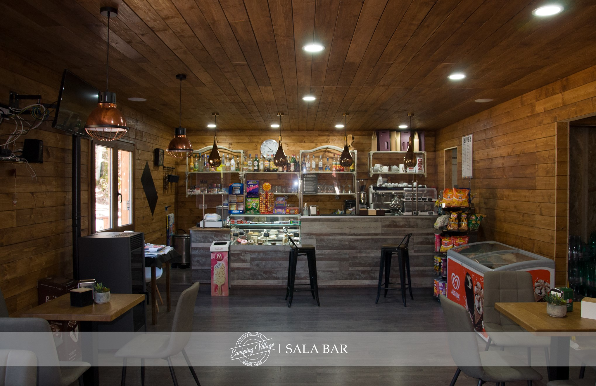

LONTANO DAL MONDO, VICINO ALLA NATURA!
Benvenuti viaggiatori!
Che vogliate ritrovare il contatto con la natura, allontanarvi dalla frenesia della città o caricarvi di energia positiva, una vacanza a Europing Camping è proprio quello che ci vuole.
Situato nell’incantevole Marsia, tra le prime località sciistiche degli anni ’70 immersa nella natura incontaminata del Parco Naturale dei Monti Simbruini a 1450 metri di altitudine, il Camping rappresenta il luogo ideale per staccare la spina e vivere in una dimensione diversa, dove le bellezze paesaggistiche e naturalistiche dominano incontrastate.
Un angolo di paradiso dove tranquillità, relax e avventura rappresentano il mix perfetto per un soggiorno indimenticabile. I nostri servizi:

Questa è una bacheca eventi.